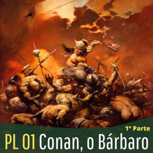
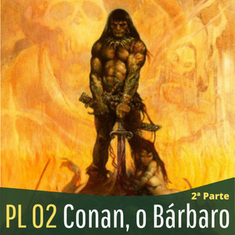
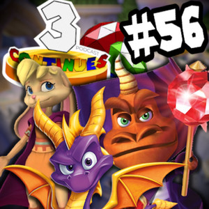

Aqui você encontra todos os podcasts em que participei.
Miyazaki Revisitado
Minipod Literário - Eduardo Spohr

PL 01 - Conan, o Bárbaro de Robert E. Howard (PARTE 1)

PL 02 - Conan, o Bárbaro de Robert E. Howard (PARTE 2)
PL 04 - Viagem ao Centro da Terra de Jules Verne
PL 11 - Rei Kull por Robert E. Howard

3 Continues #56 - Spyro no PS1
#10|"Coraline e o Mundo Secreto" ➤ Sobre gatos, traumas infantis e muita animação!
#10|"Coraline e o Mundo Secreto" ➤ Sobre gatos, traumas infantis e muita animação!
↵